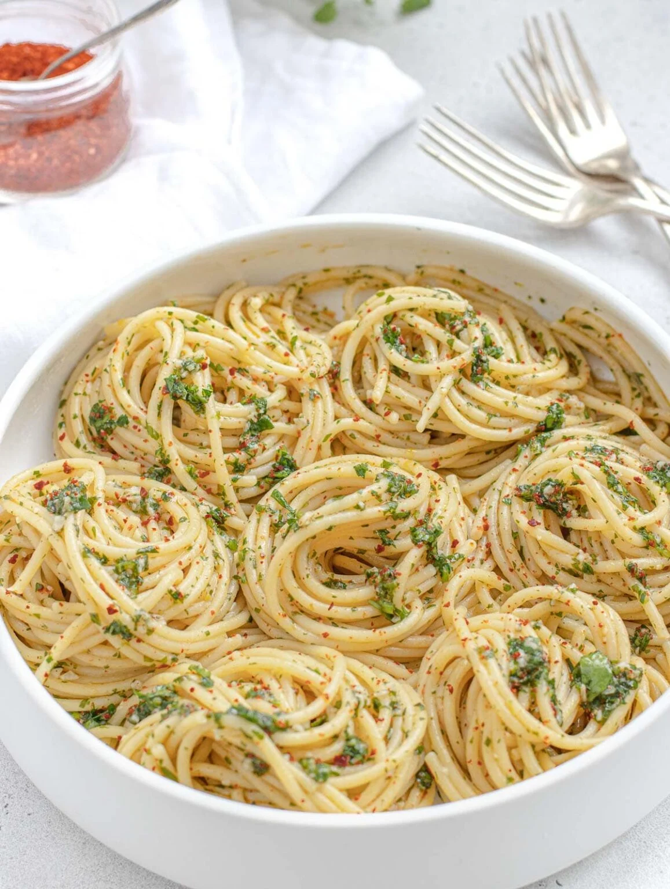

Description:
Spaghetti Aglio e Olio is an Italian pasta recipe that originated in the south of Italy, most probably
around the
Naples area, and that is now famous all over the world for its simplicity and taste.
The recipe is a "low-budget" version of another southern-Italian recipe, spaghetti with mussels, where
the sauce
is made with the same basic ingredients: plenty of extra virgin olive oil, fresh garlic, chili peppers
or red
pepper flakes, and a sprinkle of finely chopped parsley on top.
Most often Italians make garlic and oil pasta with spaghetti (hence the original name spaghetti aglio e
olio),
but you can make variations of this dish with vermicelli, linguine, bucatini, and even angel hair pasta.
Garlic and oil pasta is a perfect base recipe to build on and so you can add different ingredients if you
like.
Check out our variations below to see how we make it with lemon, spinach, broccoli, and even pan-fried
tofu.
Ingredients:
- 300 grams spaghetti
- 3 cloves garlic
- ½ tablespoon red pepper flakes or 1 fresh red chili finely chopped
- 70 grams olive oil extra virgin
- 2 handfuls flat-leaf parsley finely chopped
- 3½ litres water to cook the pasta
- 30 grams coarse sea salt for the pasta water
Steps:
- Boil Pasta. To a large pot, bring about gallon (3 to 4 liters) of water to boil,
then add
the salt and the pasta. Cook it as per package instructions minus 1 minute.
- Make sauce.
While the pasta cooks finely chop the garlic, parsley, and fresh red chili (if you use red chili
flakes you
don't have to chop them).
- To a large skillet add the olive oil and warm it up on medium-low heat. Add garlic and red chili.
Fry for 30
to 60 seconds. Turn heat off. Set aside. Don't burn the garlic.
- When the pasta is almost cooked, turn the heat on again until the garlic starts to fry then add the
finely
chopped parsley and turn the heat off again.
Move the pan around to disperse the parsley in the oil. Let fry with the residual heat of the pan.
- Toss in pasta
Reserve one cup of pasta water. Drain pasta. Toss pasta in the pan with sauce. Turn heat on medium.
Add 1
ladle of reserved pasta water. Finish cooking while mixing the pasta for one last
minute,
then serve immediately.